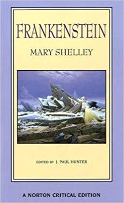
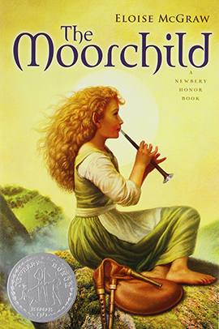
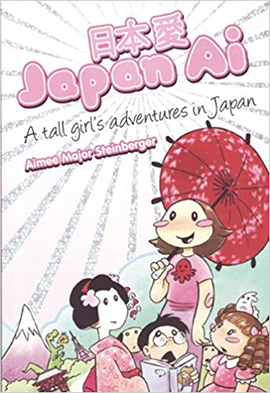

Nathalie Mairena
Fantasy Literature
Frankenstein: A Norton Critical Edition
By Mary Shelley
I highly recommend this edition in particular because of the large amounts of notes and essays included. It's especially interesting to see the changes between editions and a great way to read the thought behind the novel.
Grendel
By John Gardner
It might not be everyone's cup of tea but Grendel does a great job of analyzing the classic monster of Beuwulf.
It's full of interesting imagery, metaphors and a good look at what makes someone a monster and man. All of this mixed with Gardner's interesting prose makes it really unique.
Beowulf
Translation by Seamus Heaney
Of course, if you read Grendel you have to read Beowulf. It's a little dense but it's one of the oldest pieces of English literature, making it significant for that fact only.
This translation in particular really brings the epic poem to life and makes it a lot easier to read for a modern reader.
Name of the Wind
By Patrick Rothfuss
The prose is beautiful, the world is rich and Rothfuss trusts his readers to be smart enough to connect the pieces.
The characters are memorable and the story is epic and full of a great system of magic. It's also being turned into a movie and show soon, which'll serve to bring this masterpiece to life!
Childhood Inspiration
The Moorchild
By Eloise McGraw
I read this book to tatters over the years and ended up having to buy a new copy. It's what first introduced me to the lore of the fae outside of Disney and is not afraid to bring up serious topics to its child audience.
It's a bittersweet story that has you rooting for the young fairy protagnist you spend years getting to know.
The Spook's Apprentice
By Joseph Delaney
I found this series when I was little older but it pulled me in just the same. The writing is fast paced and rich and the characters are memorable.
The drawings and some of the imagery can make you uneasy but in a fun way.
Artemis Fowl
By Eoin Colfer
Another story full of fairies and monsters and magic. Speaking of memorable characters, Artemis Fowl is unique in that you have a main protagonist being the villain in the world he's in. Still, it doesn't keep you from rooting for him to reach his goals.
Warrior Cats
By Erin Hunter
One of the first longterm series I ever read, it defintely fueled my obsession with warriors and cats.
For a child's book, there's a lot of scandal, violence and drama but Hunter knows how to balance it out and keep it from being scary.
Graphic Novels/Comics
Japan Ai
Aimee Major Steinberger
A quirky travel journal full of cutesy but detailed drawings. I can read this book over and over for the visuals alone. You can find something new with each reread and it makes you want to go traveling too!
Space Boy
Stephen McCranie
Despite it being free online, I bought the first volume as soon as I could. Space Boy has such a unique atmosphere around it, easily going from deeply melonchaly to being full of touching and sweet moments. The art is beautiful and deserves to be seen in all its printed glory.
Watchmen
By Alan Moore
You've probably seen the movie, or heard about it or even read the comic before. It really was one of the first comics to depict Superheroes in a realistic way and deserves to recognized for that alone.
If you're looking to be read about good heroes who are bad people, this is the book for you.
Monstress
By Marjorie Liu
The art in the series is beautiful and flows easily through the pages. Sometimes it can be hard to figure out what exactly is going on, but the art alone carries the comic along.
Short Stories

The Complete Stories
Flannery O'Connor
O'Connor is one of the masters of making the mundane scary. Reading through her stories full of despicable but sympathetic people often leaves you feeling conflicted in a way that only the best kind of writing can.
The Lottery and Other Stories
By Shirley Jackson
Jackson is another great Southern Gothic writer like O'Connor. She knows just how to make her readers uneasy and paranoid. She can make you question whether or not the fantastical things taking place in her stories could actually happen.